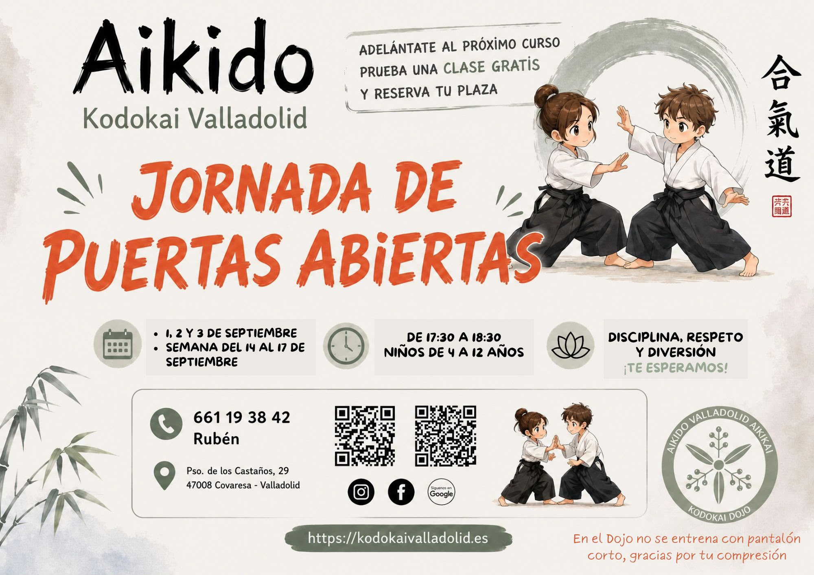
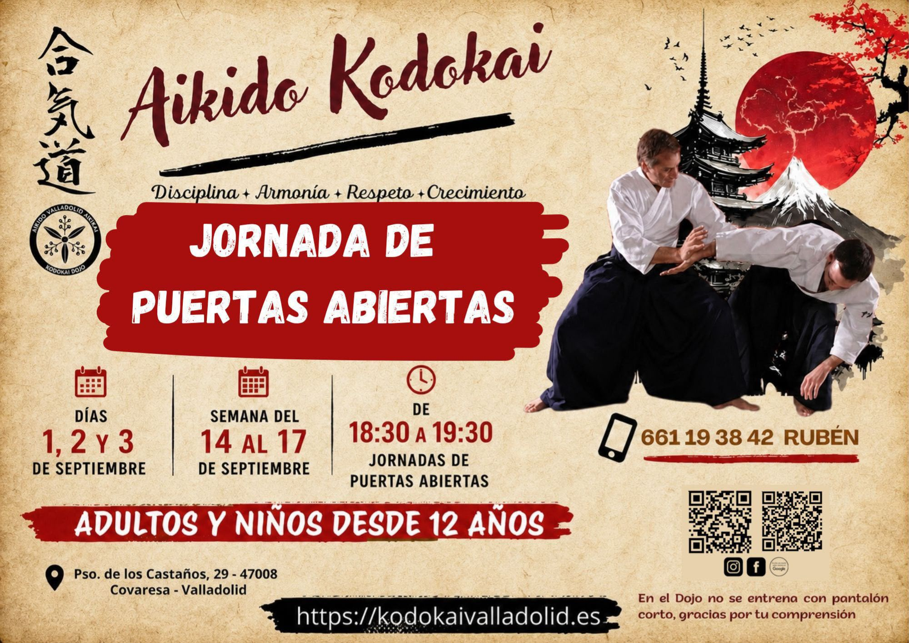

Próximas actividades


Publicamos aquí las fechas de seminarios, exámenes de grado, jornadas de puertas abiertas y otras actividades organizadas por el Dojo o en colaboración con maestros invitados. Si tienes dudas sobre inscripción o requisitos, escríbenos.
Contacto — teléfono (también Whatsapp) y correo para consultas sobre eventos.
Qué encontrarás
Seminarios y stage
Jornadas intensivas de práctica con instructores del propio Dojo o visitantes, para profundizar en técnica, armas o aspectos pedagógicos del Aikido.
Exámenes y evaluaciones
Convocatorias de examen de kyu y dan cuando el maestro lo considere oportuno, siempre con la preparación adecuada en clase.
Encuentros del Dojo
Celebraciones de fin de curso, demostraciones y actividades que refuerzan el espíritu de comunidad entre practicantes y familias.